两周期数字存内计算处理器零基础精讲：电路、算法、数据，三层各破一关 A 28-nm 19.9-to-258.5-TOPS/W 8b Digital Computing-in-Memory Processor With Two-Cycle Macro Featuring Winograd-Domain Convolution and Macro-Level Parallel Dual-Side Sparsity（IEEE JSSC, vol.60, no.1, 2025）
CiM 的能效很高，但吞吐一直被“计算周期数”拖累：一个 INT8 MAC 结果要多个周期才能拼出来（位串行 8 周期、Booth 4 周期）。这篇 IMECAS 的 JSSC 长文从三个层级各出一招，把“吞吐-能效”的矛盾逐一化解：
- 电路级：Radix16 + LUT 数字 CIM 宏——一次处理 5 位激活，INT8 MAC 只需 2 个周期；用查表（LUT）实现最贵的 ±3W~±7W 部分积 → 动态功耗 −21.7%、完整 MAC 功耗 −2.44×；
- 微架构级：混合 Winograd（F2+F4 按层选）——用“变换”换掉乘法（F4 时乘法 ÷4）；按层混合避免 F4 的精度崩盘 → ResNet34 2.59× 加速、精度仅掉 0.6%；
- 数据级：MDPS 宏级并行双端稀疏——激活侧“连续 4 零跳过”、权重侧“水平压缩不存稀疏”→ 50% 双端稀疏时能效 3.11×。
28nm 原型：峰值 258.5 TOPS/W（0.6V/116MHz）、19.9~258.5 TOPS/W 范围、归一化吞吐比 SOTA 高 2.55~7.08×。
- CiM 的吞吐 = 周期数的倒数：频率和 MAC 数固定后，一个 MAC 结果要几个周期，吞吐就是几分之一。所以“两周期宏”= 直接让吞吐翻 2~4 倍。
- Winograd 是“用便宜运算换贵运算”：卷积的“乘法”很贵，Winograd 先用加/减/移位把数据变换到另一个域，在那里乘法变少（F4 减少 4 倍），算完再变换回来。关键是变换本身几乎不耗电。
- 稀疏 = 跳过而不是算：激活/权重里很多 0，跳过它们（而不是让加法器白算）就是最直接的省电。难点在“刚性阵列”上怎么灵活跳过——MDPS 的答案是“宏级调度 + 压缩重排”。
§0.1摘要逐句精读
| 原文（摘录） | 人话解释 |
|---|---|
| “current CiM schemes generally suffer from limited throughput… the key reason is that the CiM macro calculation must iterate through multiple cycles” | CiM 吞吐受限的核心原因：宏计算必须迭代多个周期才出完整 MAC 结果。 |
| “we present a Radix16-based digital-CiM macro with look-up table (LUT) optimization to reduce dynamic power consumption” | 贡献 1：Radix16 宏 + LUT 优化（两周期 + 低动态功耗）。 |
| “we devise a hybrid Winograd microarchitecture and dataflow that supports (2, 3) and (4, 3) Winograd convolution” | 贡献 2：混合 Winograd（F2+F4）微架构与数据流，精度与减载的折中。 |
| “we propose a macrolevel parallel dual-side sparse CiM core… to reduce the input cycle of activation data and improve the mapping efficiency of the weight data” | 贡献 3：宏级并行双端稀疏核——压缩激活输入周期、提升权重映射效率。 |
| “achieves a peak system energy efficiency of 19.9–258.5-TOPS/W… 2.55–7.08× higher than other state-of-the-art CiM processors” | 实测：峰值 258.5 TOPS/W（0.6-1.1V、78-287MHz），归一化吞吐比 SOTA 高 2.55~7.08×。 |
§0.2论文的核心贡献清单
- Radix16 + LUT 两周期宏：5 bit/周期、INT8 两周期；LUT 覆盖 53.3% 的“移位+加法”部分积 → 动态功耗 −21.7%、完整 MAC 功耗 −2.44×、宏级能效比 +1.84~2.44×；
- 混合 Winograd：F2/F4 按层选择 + 核分解（>3×3）+ 激活分段（stride=2）+ PCO 映射 → ResNet34 2.59× 加速、精度 −0.6%；
- MDPS 双端稀疏：ISPU（bit-mask + tile 压缩）+ PPRS（权重水平压缩重排）+ OMB（结果合并）→ 50% 双端稀疏 3.11× 能效（面积/功耗仅 +4.5%/+7.8%）；
- 三级技术解耦：电路/微架构/数据三级优化彼此独立，可单独复用、可与其他算法级稀疏正交叠加；
- 实测：258.5 TOPS/W 峰值、2.55~7.08× 归一化吞吐、Winograd+稀疏叠加 8.05×（ResNet34）。
完全零基础：按 01→09 顺序读，重点玩 3 个交互仿真、看 3 个视频，约 60 分钟。这篇是“系统级三层优化”的范文——读的时候注意每个创新点分别对应哪一层、解决什么矛盾。
§1背景：CiM 的吞吐瓶颈 —— 周期数决定一切
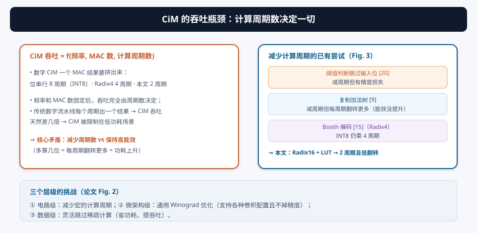
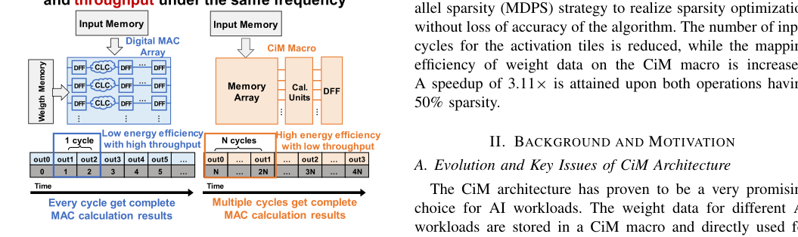
数字 CiM 的每个 MAC 结果需要多个计算周期：位串行 8 周期（INT8）、Booth/Radix4 4 周期。频率和 MAC 单元数固定后，吞吐完全由周期数决定——这就是 CiM 被限制在“低功耗场景”而进不了“高性能场景”的根本原因。论文把问题拆成三个层级（Fig. 2）：
- 电路级：减少宏的计算周期（同时别让每周期翻转暴增）；
- 微架构级：通用 Winograd 优化（支持各种卷积配置且不掉精度）；
- 数据级：灵活跳过稀疏计算。
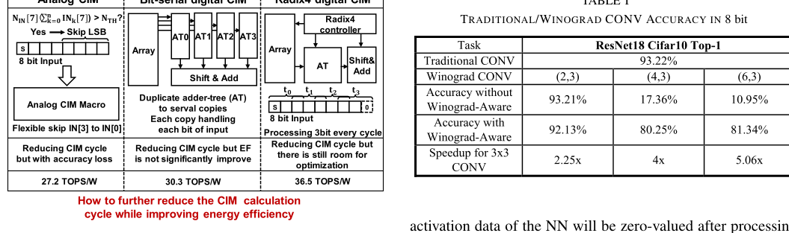
§2乘法分解的演进：1 位 → 3 位 → 5 位
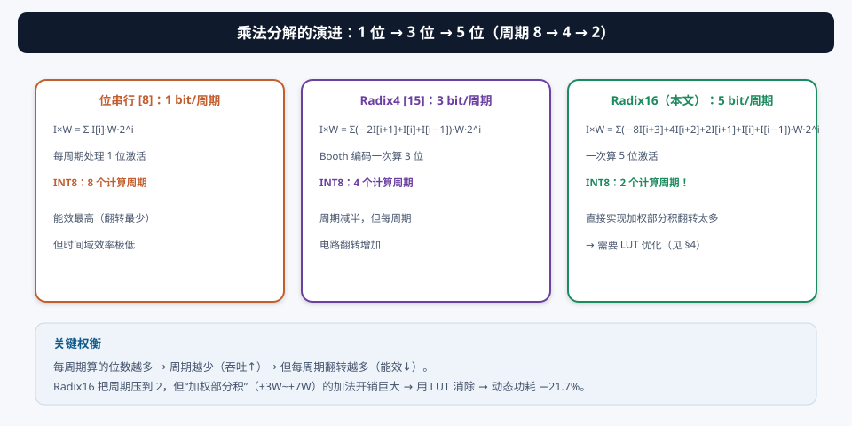
每周期算的位数越多 → 周期越少（吞吐↑）→ 但每周期要处理的“加权部分积”越复杂（翻转↑、功耗↑）。Radix16 把周期压到 2，但部分积里出现 ±3W~±7W 这类“既要移位又要加法”的项——直接实现会让每周期功耗爆炸。LUT 就是来救这个场的（§3）。
§3创新①：Radix16 + LUT 两周期数字 CIM 宏
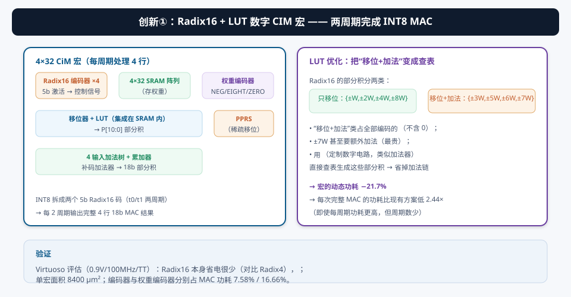
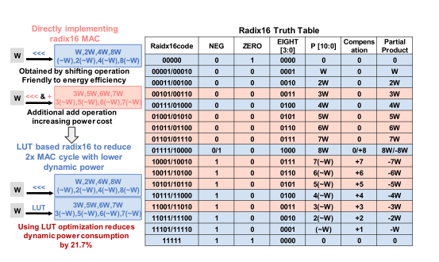
为什么需要 LUT？Radix16 的部分积分两类：
- 只移位：{±W, ±2W, ±4W, ±8W}——便宜，移位器即可；
- 移位+加法：{±3W, ±5W, ±6W, ±7W}——占全部编码的 53.3%（不含 0），±7W 甚至要两次额外加法，最贵。
论文用 LUT（定制数字电路，结构与加法器类似，面积不大）直接“查表”生成这些部分积 → 省掉加法链 → 宏动态功耗 −21.7%。评估（Virtuoso，0.9V/100MHz/TT）：虽然每周期功耗高于现有方案，但 每次完整 MAC 的功耗低 2.44×（周期少了）。
单宏面积 8400 μm²；Radix16 编码器单元占 MAC 功耗 7.58%、权重编码器占 16.66%。对比 Radix4 [15]：Radix16 本身省电很少——LUT 才是功耗大降的关键（Fig. 8 的直接证据）。
§4Winograd 算法基础：用“变换”换掉乘法
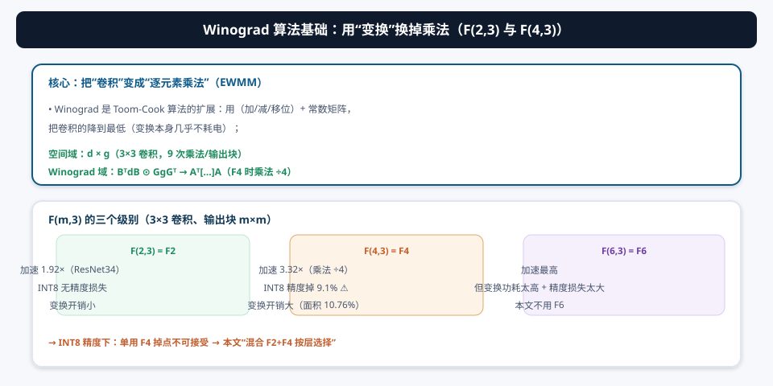
Winograd 是 Toom-Cook 算法的扩展：用便宜的变换操作（加、减、移位）配合常数矩阵，把卷积的乘法次数降到最低。对于 3×3 卷积、输出块 m×m，记为 F(m,3)：
- F(2,3)=F2：加速 1.92×，INT8 下无精度损失，变换开销小；
- F(4,3)=F4：乘法 ÷4（加速 3.32×），但 INT8 下精度掉 9.1%（不可接受）；
- F(6,3)=F6：加速最高，但变换功耗太高 + 精度损失太大 → 本文不用。
BᵀdB、GgGᵀ 这些变换矩阵的元素是 0、±1、±1/2 之类的小常数——乘它们就是加/减/移位，几乎不消耗“真正的乘法”。而 EWMM 阶段每个输出点只做一次乘法（F4 时乘法数 ÷4）。所以“变换开销 << 省下的乘法开销” → 净加速。
§5创新②：混合 Winograd（F2+F4 按层选）微架构与数据流
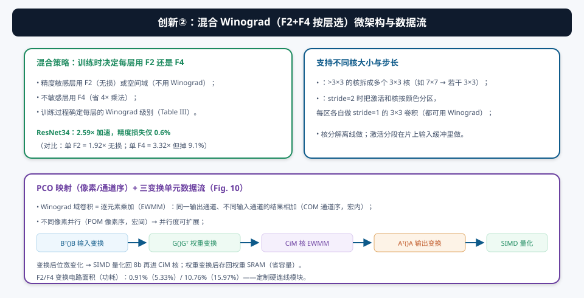
为什么“混合”？单用 F2 无损但只 1.92×；单用 F4 有 3.32× 但掉 9.1%。混合策略在训练时为每一层决定用 F2、F4 还是空间域（Table III）：精度敏感层用无损选项、不敏感层用 F4 → ResNet34 加速 2.59×、精度仅掉 0.6%（站上帕累托前沿，见 d09）。
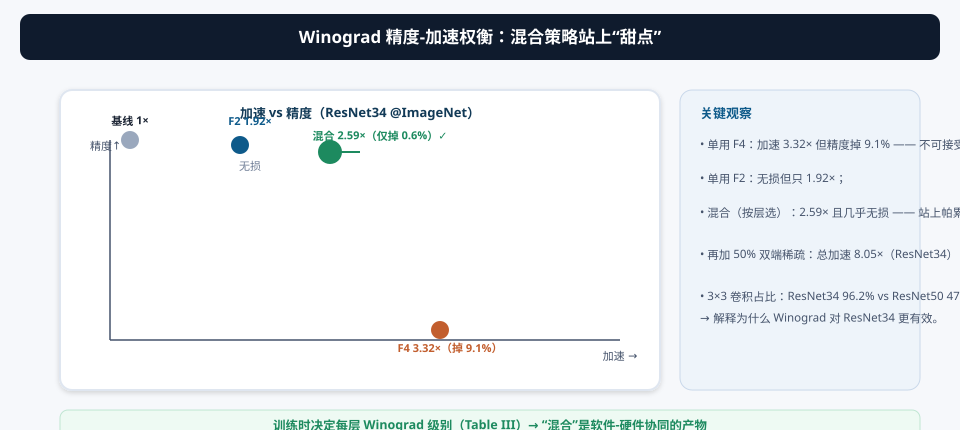
如何支持各种卷积配置？
- 核分解：>3×3 的核（如 7×7）拆成多个 3×3 核，各自可用 Winograd（离线做）；
- 激活分段：stride=2 时把激活和核按“颜色”分区，每区做 stride=1 的 3×3 卷积（片上输入缓冲做）；
- PCO 映射：Winograd 域是 EWMM——同一输出通道、不同输入通道的结果相加（COM 通道序，宏内）；不同像素并行（POM 像素序，宏间）→ 并行度可扩展。
三变换单元数据流：Bᵀ()B（激活输入变换）→ CiM 核 EWMM → Aᵀ()A（输出逆变换）→ SIMD 量化回 8b；权重经 G()Gᵀ 变换后存回权重 SRAM（省容量）。F2/F4 变换电路面积（功耗）占比 0.91%（5.33%）/ 10.76%（15.97%）。
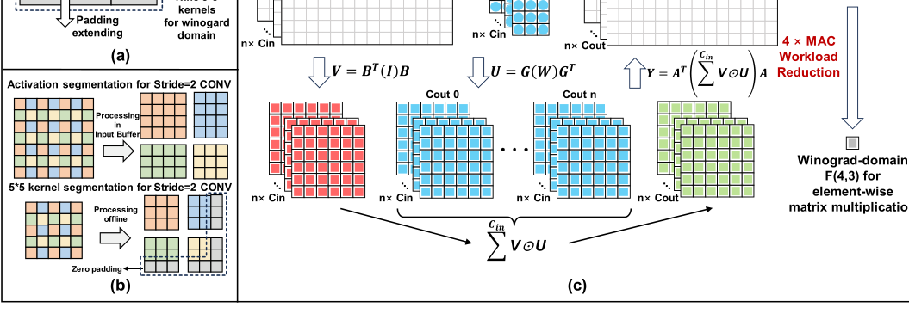
§6创新③：MDPS 宏级并行双端稀疏
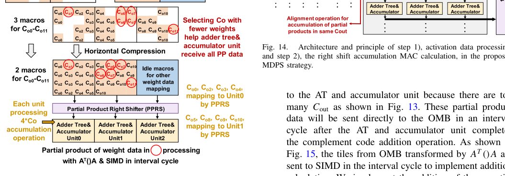
稀疏优化在“刚性阵列”的 CiM 里很难做——随机分布的非结构化稀疏会让激活数据“重新进入”阵列。MDPS 的解法是只在宏级调度，分三步：
- 激活处理（ISPU）：bit-mask 生成器按激活稀疏度生成掩码；连续 4 个稀疏数据就跳过（对应单个 4×32 宏输入规模）；tile 压缩器去掉稀疏段、tile 分配器把有效数据依次送入；
- 右移累加 MAC（PPRS）：权重水平压缩（只改列位置、不改行位置 → 稀疏随机分布不引起激活重入）；PPRS 按权重索引把每个 P[10:0] 移回正确位置再进 4 输入加法树；
- 结果合并（OMB）：权重索引 + 合并配置（由 bit-mask 生成）控制写地址；有效结果写正确位置、零值写空白；Cout 太多时部分积经间隔周期送 SIMD + 全局 SRAM 补加（隐藏延迟）。
50% 激活稀疏 → 1.84×；50% 权重稀疏 → 1.76×；双端 50% → 3.11× 能效。稀疏控制电路（ISPU/PPRS/OMB）面积仅 +4.5%、功耗仅 +7.8%。
§7系统架构与两种工作模式
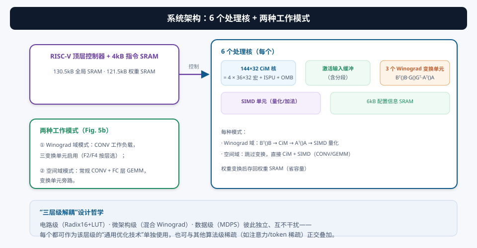
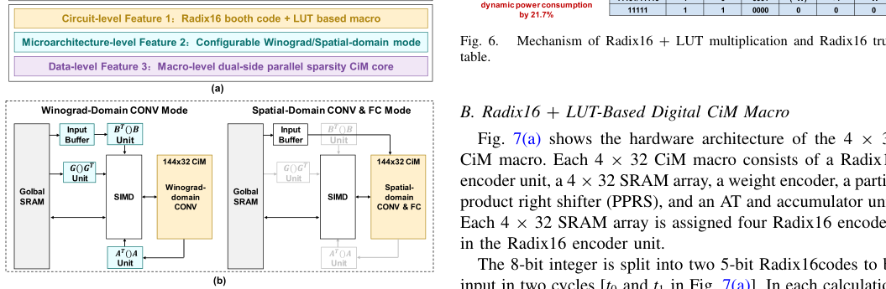
- 6 个处理核：每个核含 144×32 CiM 核（= 4 × 36×32 宏 + ISPU + OMB）、激活输入缓冲、3 个 Winograd 变换单元（Bᵀ()B、G()Gᵀ、Aᵀ()A）、SIMD 单元、6kB 配置 SRAM；
- 全局存储：130.5kB 全局 SRAM + 121.5kB 权重 SRAM + 4kB 指令 SRAM；
- 两种模式：Winograd 域模式（CONV，三变换启用、SIMD 量化）与空间域模式（常规 CONV + FC GEMM，变换旁路）。
电路级（Radix16+LUT）· 微架构级（混合 Winograd）· 数据级（MDPS）三个创新彼此独立、互不干扰——每个都能作为“该层级的通用优化技术”单独使用，也能与其他算法级稀疏（如 Transformer 的 attention/token 稀疏）正交叠加。这是系统级论文最值得学的“模块化创新”写法。
§8实测与对比：28nm 芯片的成绩单
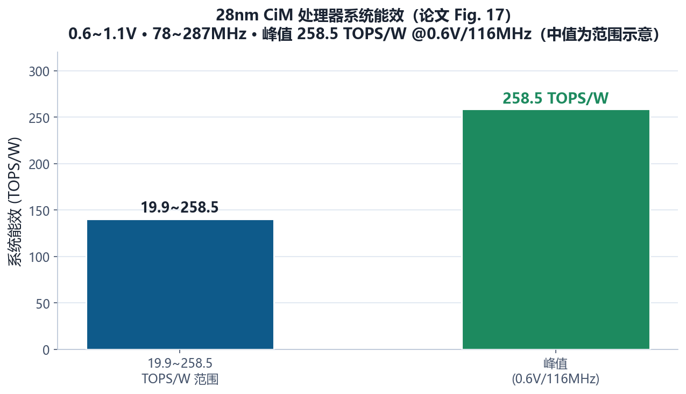
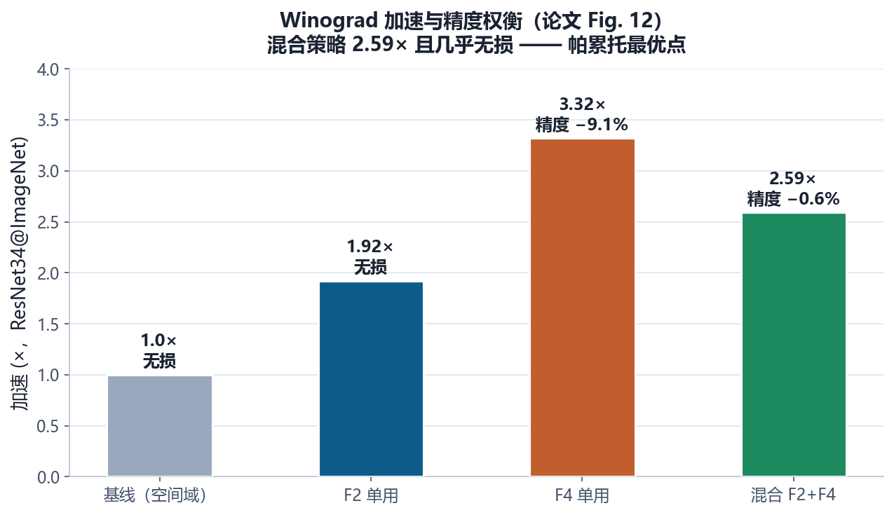
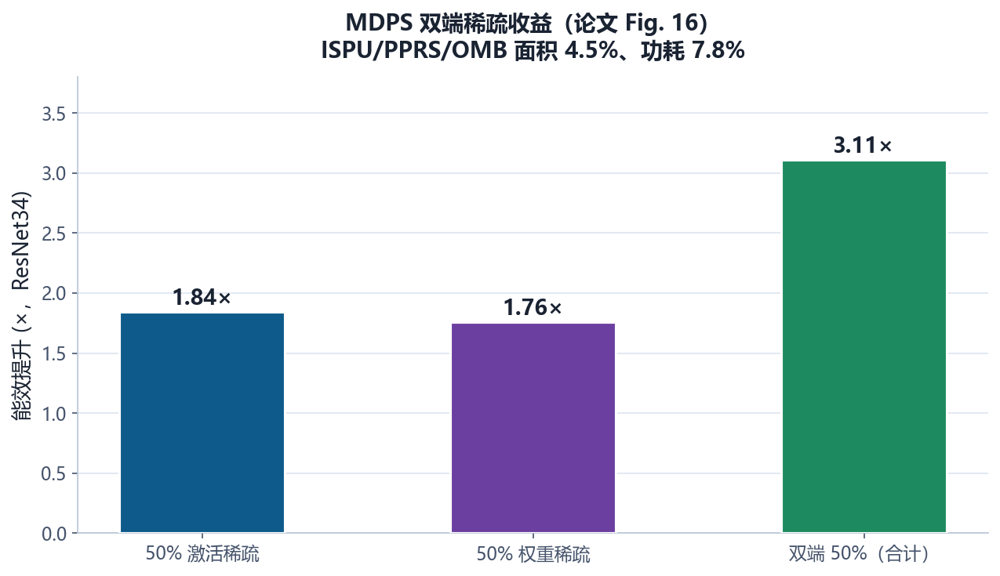
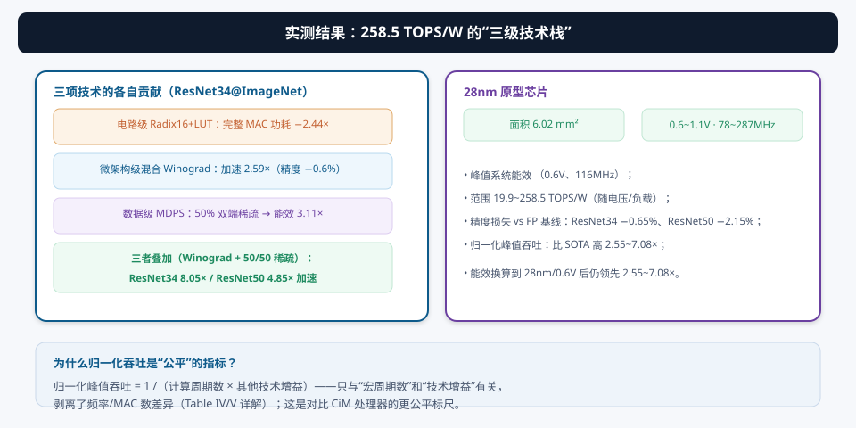
- 芯片：28nm，6.02 mm²；0.6~1.1V、78~287MHz；
- 能效：峰值 258.5 TOPS/W（0.6V/116MHz，全三项技术）；
- 精度：ResNet34（Top-5）/ResNet50（Top-1）@ImageNet，精度损失 0.65% / 2.15%（主要是量化，Winograd 贡献很小）；
- 加速：混合 Winograd 2.59×/1.51×；叠加 50% 双端稀疏后 8.05×/4.85×；
- 归一化吞吐：1/（周期数 × 技术增益）指标下比 SOTA 高 2.55~7.08×。
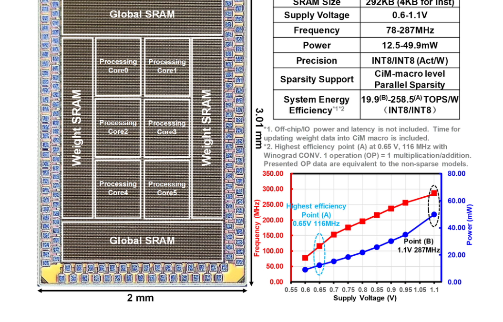
① 峰值 258.5 TOPS/W 是“三项技术全开 + 0.6V”的条件值；对比表里把前作能效按工艺和电压换算到 28nm/0.6V再比——换算本身有假设，读时要理解；② “归一化峰值吞吐”指标剥离了频率/MAC 数，只反映“周期数×技术增益”——这比直接比 TOPS 公平，但也没反映面积/功耗全貌；③ 精度损失大头是量化，Winograd 只贡献一小部分——别把两项的精度账混在一起。
§9未来研究方向 · 术语表 · 参考资料
9.1 未来研究方向
- 更低位宽的两周期扩展：Radix16 是 5 bit/周期 → INT8 两周期。扩展到 FP8/MXFP（06 号论文）的“位宽可配两周期”宏？Radix32（一次 6~7 bit、INT8 一周期）？LUT 的面积与翻转代价要重新权衡；
- Winograd 的深度集成：本文 F2/F4 变换是硬连线模块。做成“可编程变换单元”（支持 F6、1D-Winograd、不同 tile 大小），并研究“Winograd 域稀疏”（先变换后剪枝 [29] 的硬件化）——与 MDPS 在 Winograd 域内协同；
- 稀疏的在线化与自适应：MDPS 用静态 bit-mask。能否在线检测激活稀疏并动态调度（运行时自适应）？把 02 号论文的动态启动器思路和 MDPS 结合，稀疏加速更贴近真实数据分布；
- 训练支持：本文是推理。训练需要反向传播（转置乘，03 号论文）——把“两周期宏 + 转置读口”结合，得到“推理-训练两周期”处理器；
- 与 Transformer/LLM 的结合：三层级技术（Radix16/混合 Winograd/MDPS）都面向 CNN。Transformer 的 GEMM 部分能直接用两周期宏（空间域模式），注意力稀疏可正交叠加——做一个“CNN+Transformer 通吃”的通用 CIM 处理器；
- 更先进的工艺与集成：28nm → 先进节点（3nm 等），Radix16+LUT 的数字逻辑能效随工艺提升；配合 3D 堆叠（08 号论文）或 eNVM（05 号论文）做大容量集成。
9.2 术语表
- 计算周期（Calculation Cycle）
- CIM 宏出一个完整 MAC 结果所需的周期数；决定吞吐。
- Radix16
- 每次处理 5 位激活的乘法分解（INT8 两周期）。
- LUT（Look-Up Table）
- 查表电路；本文用它实现 ±3W~±7W 部分积，省加法链（−21.7% 功耗）。
- Winograd
- Toom-Cook 扩展：变换到另一域做逐元素乘加，减少乘法次数。
- F(m,3)
- 3×3 卷积、输出块 m×m 的 Winograd 级别（F2/F4/F6）。
- EWMM（Elementwise Matrix Multiply）
- 逐元素矩阵乘（Winograd 域的核心运算）。
- Bᵀ()B / G()Gᵀ / Aᵀ()A
- 激活/权重输入变换与输出逆变换单元。
- 核分解（Kernel Decomposition）
- >3×3 核拆成多个 3×3 核以使用 Winograd。
- 激活分段（Activation Segmentation）
- stride=2 时把激活分区，各区做 stride=1 卷积。
- PCO（Pixel/Channel Order）映射
- COM（通道序，宏内）+ POM（像素序，宏间）。
- MDPS（Macrolevel Parallel Dual-Side Sparsity）
- 宏级并行双端稀疏：激活压缩 + 权重水平压缩。
- ISPU（Input Sparsity-Processing Unit）
- 输入稀疏处理单元：bit-mask + tile 压缩/分配。
- PPRS（Partial Product Right Shifter）
- 部分积右移器：把水平压缩后的权重 P[10:0] 移回正确位置。
- OMB（Output Merge Buffer）
- 输出合并缓冲：把有效 MAC 结果写回正确位置。
- 归一化峰值吞吐
- = 1 /（计算周期数 × 技术增益），剥离频率/MAC 数的公平指标。
9.3 参考资料
- H. Wu, Y. Chen, Y. Yuan, J. Yue, X. Wang, X. Li, F. Zhang, “A 28-nm 19.9-to-258.5-TOPS/W 8b Digital Computing-in-Memory Processor With Two-Cycle Macro Featuring Winograd-Domain Convolution and Macro-Level Parallel Dual-Side Sparsity,” IEEE JSSC, vol. 60, no. 1, pp. 347-361, Jan. 2025. DOI: 10.1109/JSSC.2024.3409356
- A. Lavin and S. Gray, “Fast algorithms for convolutional neural networks,” CVPR 2016, pp. 4013-4021.（Winograd [21]）
- F. Tu et al., “A 28nm 29.2TFLOPS/W BF16 and 36.5TOPS/W INT8 Reconfigurable Digital CIM Processor…,” ISSCC 2022, pp. 255-257.（Radix4 前作 [15]）
- J. Yue et al., “A 28nm 16.9-300TOPS/W Computing-in-Memory Processor Supporting FP NN Inference/Training…,” ISSCC 2023, pp. 1-3.（[13]）
- F. Tu et al., “MuITCIM: A 28nm 2.24μJ/token Attention-Token-Bit Hybrid Sparse Digital CIM-Based Accelerator for Multimodal Transformers,” ISSCC 2023, pp. 248-250.（[17]）
- S. Han et al., “Learning both weights and connections for efficient neural network,” NeurIPS 2015, pp. 1135-1143.（稀疏压缩 [24]）
- X. Liu, J. Pool, S. Han, W. J. Dally, “Efficient sparse-Winograd convolutional neural networks,” arXiv:1802.06367.（Winograd 域稀疏 [29]）